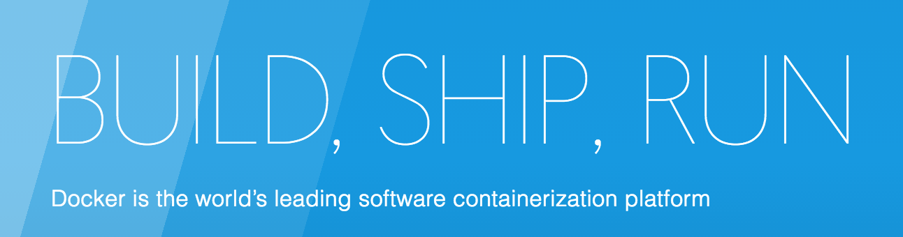
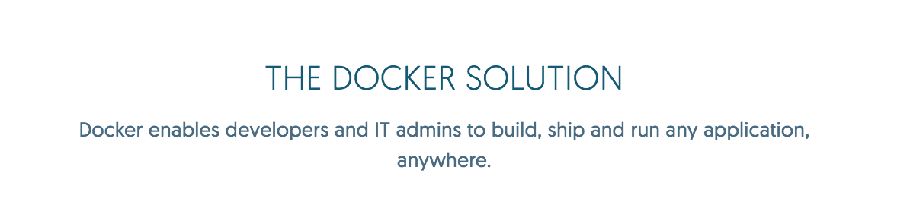
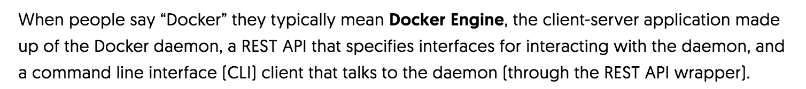
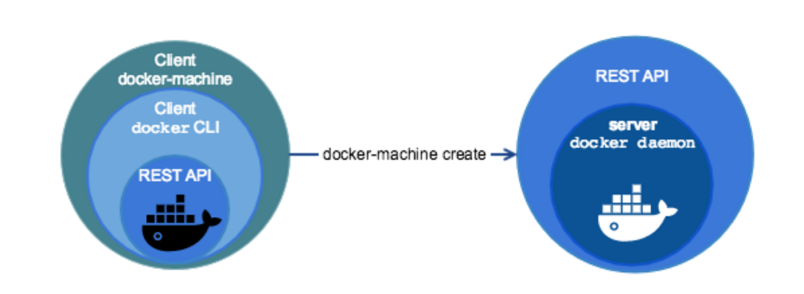
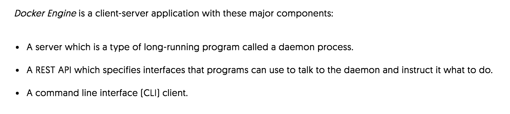
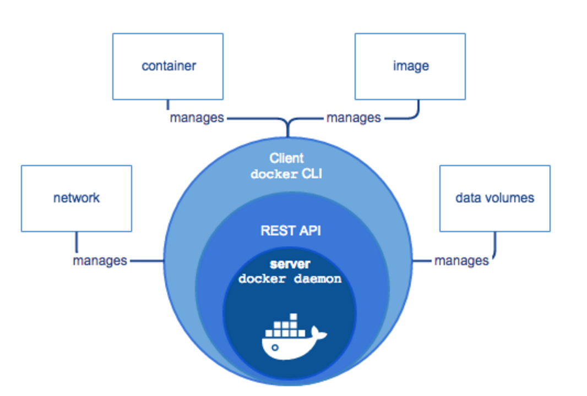
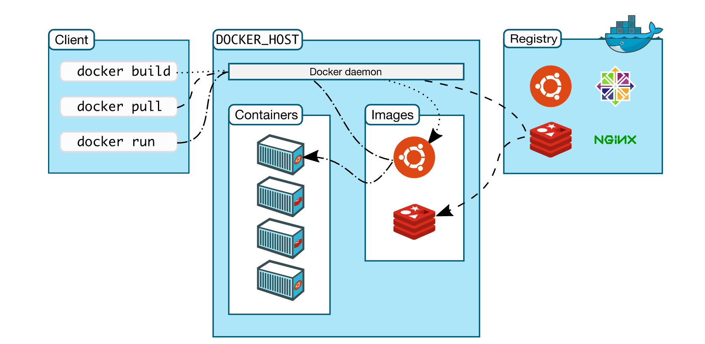

Docker in 7 minutes
Key concepts and getting started

21 October 2016 | Def Method company meeting | Lightning talk by Paige Bolduc
What problem is Docker trying to solve?
 Containers versus Virtual Machines

Image source: http://www.theregister.co.uk/2015/01/07/asigra_dockerises_cloud_backup/
Key Docker Terminology
Docker Machine
Docker Engine
Docker Daemon
Docker Client
Container
Image
Registry
The Docker Platform
Docker Machine & Docker Engine
 Useful links: Docker platform overview, machine vs. engine
Docker Daemon & Docker Client
 Docker Daemon & Docker Client
Useful links: Docker enginge docs, Terminology- Section 1.2
Containers, Images, & Registries
Sample Dockerfile
FROM node:argon
# Create app directory
RUN mkdir -p /usr/src/app
WORKDIR /usr/src/app
# Install app dependencies
COPY package.json /usr/src/app/
RUN npm install
# Bundle app source
COPY . /usr/src/app
EXPOSE 8080
CMD [ "npm", "start" ]
Useful links:
1.) Docker docs: "Hello, World!" for Containers
2.) Docker docs: How does an image work?
3.) Docker registry
Getting Started
Download: Docker for Mac
Docker Docs: Typical Docker platform workflow
Docker tutorial: Docker for Beginners by Prakhar Srivastav
Browse Docker images: Docker Hub
Other Useful Resources

The Linux Information Project
AWS's "What is DevOps?" (bit of a rabbit hole)
the agile admin's DevOps article